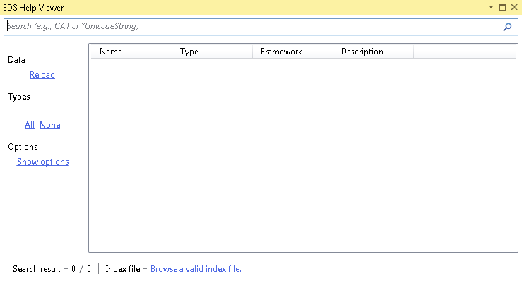
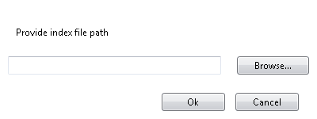
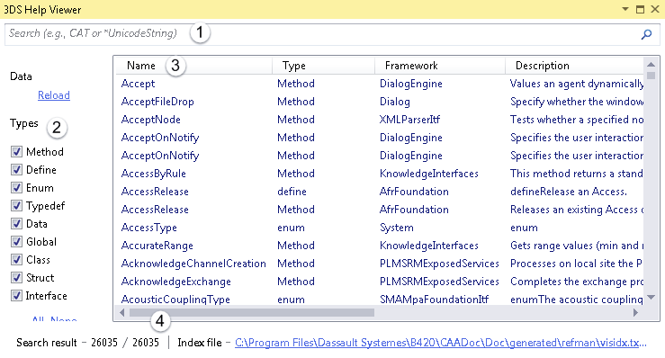
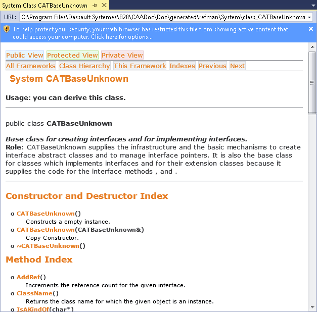
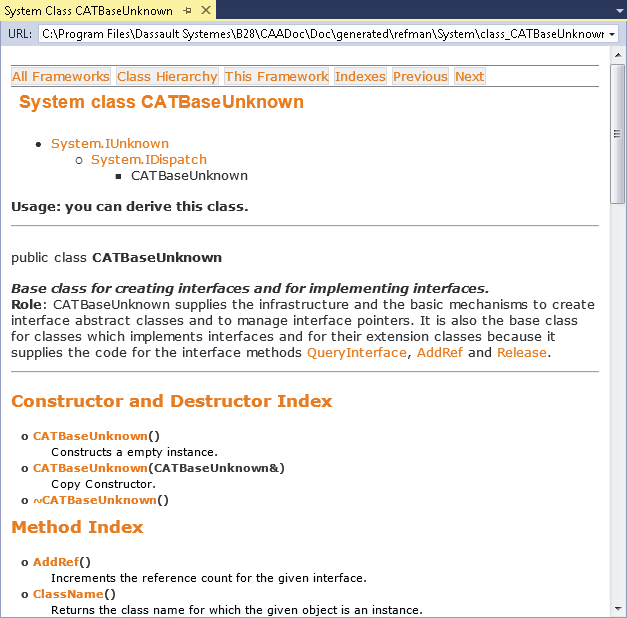
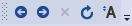

3DS Help Viewer |
|
The 3DS Help Viewer gives you access to the API reference documentation. |
Before you begin:
|
On the Help menu, click 3DS Help Viewer.
If the API documentation documentation index file is not found in the workspace prerequisites, either:

If you have already declared the workspace prerequisites including an API documentation index file, click Reload and skip to step 5 below. Otherwise, click the Browse a valid index file link.
You are asked to select the index file path:

Either type the path of the visidx.txt.htm file, or click Browse to find it.
This file is located in the folder where you have installed the API
CD-ROM. You must go down to the CAADoc folder, that is, for
an installation root folder named by default B28 in
C:\Program Files\Dassault Systemes, the path to select is
C:\Program Files\Dassault Systemes\B28\CAADoc\Doc\generated\refman\visidx.txt.htm.
Click OK.
The 3D Help Viewer opens.

The 3DS Help Viewer is a tool window that you can dock to the edge of a frame in the IDE or undock and move where you want. It includes:
It gives access to the API reference documentation. Each topic displayed opens a browser page in a document window, listed in the Windows menu.
Double click a row in the 3DS Help Viewer to display the associated API reference documentation. Each topic displayed opens a browser page in a document window that replaces the preceding one, listed in the Window menu.

The imbedded browser prevents JavaScript from running without your authorization. To enable JavaScript and display the full documentation:
Click the warning on top of this window.
A menu is displayed.
Click Access block content.
A security warning prompt opens.
Click Yes in this prompt.

With such as window, you can use the IDE Web Browser toolbar:

You can also navigate the hyperlinks in this window to display the linked files.
You can search for a given topic from its name, or part of its name. For example, to search for the CATBaseUnknown class, type in the search box CATBase*, CATBaseUnk*, or CATBaseUnknown*. The found topics are automatically displayed when you type, and refreshed when a new character is typed.
Always type a * wildcard character at the end, even if you type the exact name. You can also use this wild character at the beginning, or anywhere within the typed character string, such as *ATBase*, or *ATB*eU*.
You can use the ? character as a wildcard character to replace a single character. For example, typing CATI?DGeovisu finds CATI2DGeovisu and CATI3DGeovisu
Double click a row among the results displays the corresponding page.
The 3DS Help Viewer displays up to 100 results. If more are found, you must filter them to make sure you can access the ones you are looking for. To do this, you can either:
For example, if you search for CATICGMSolidSphere, typing CATICGM* finds 165 results, among which 65 are not displayed.. Refining to CATICGMS* finds only 17 results, all displayed.
In the series of check boxes in the left part, uncheck the types for which you do not want any results. You can also click None to simultaneously uncheck all the check boxes, and then check the only type(s) you are interested with, or click All to simultaneously check all the check boxes, and then uncheck the only type(s) you are not interested with.
Note that the Method check box includes the class or interface member functions and the global functions.
Each column in the table can be clicked to sort the table according to the clicked column.
For example, clicking the Type column displays the results by sorting this column cell values in alphabetical order. Clicking again the Type column displays the results by sorting this column cell values in the reverse alphabetical order.
| Version: 2 [Jul 2017] | Update for V5-6R2018 and Visual Studio 2015 |
| Version: 1 [Jul 2014] | Document created |